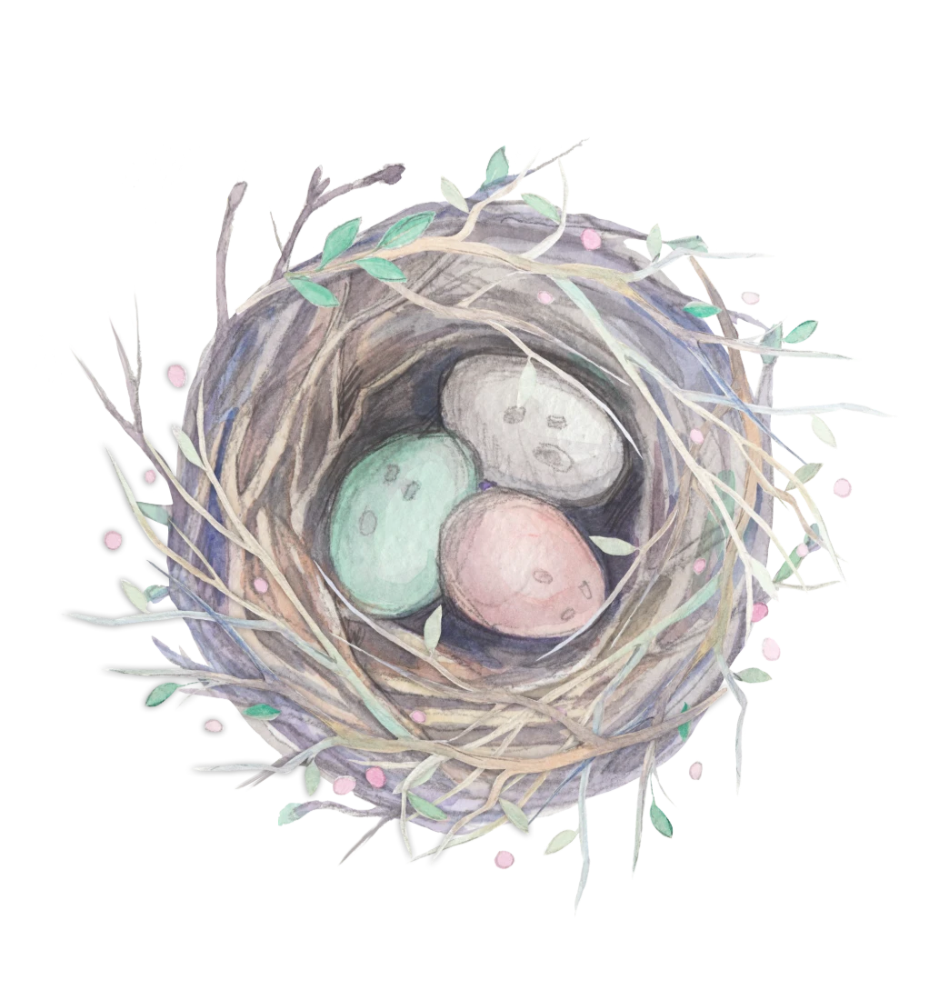
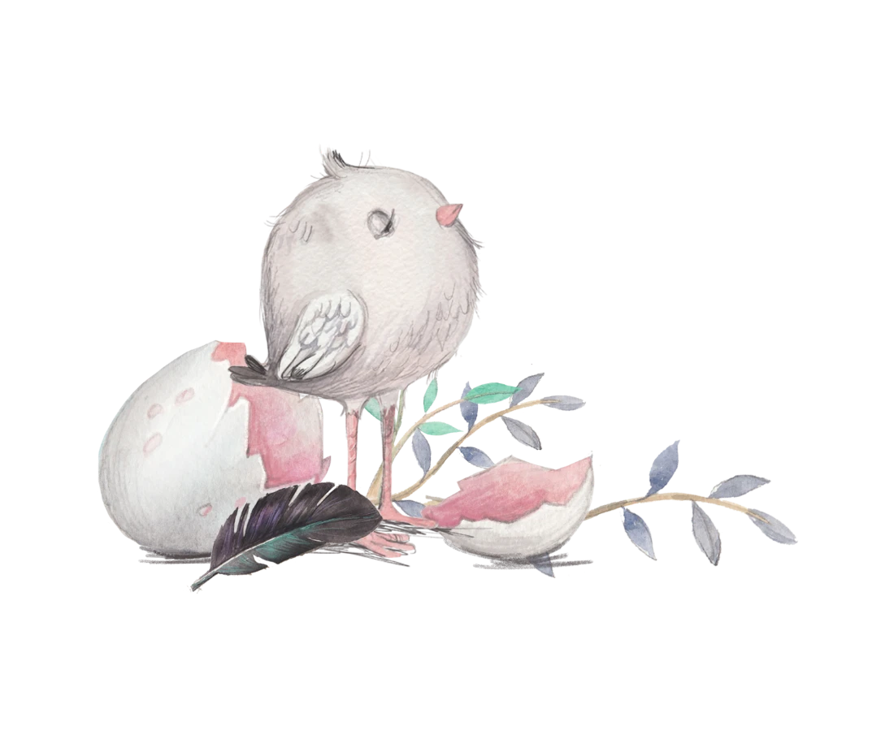

Primary lockup — the pair

TAKE SOME TIME
Pregnancy & Postnatal Massage

Other lockups
TAKE SOME TIME
Mid-Essex
Stacked — parent above the wordmark
take some
time
time
Horizontal — fledgling + name
TAKE SOME TIME
Mid-Essex
Reversed — the pale bird carries dark backgrounds
On the About page (& elsewhere)
hello, I'm Kia
The someone who asks how you're doing.
I'm a mobile massage therapist across Chelmsford and mid-Essex, with over fifteen years of looking after mums-to-be and new mums. I bring the couch, the towels and the oils — you bring an hour to switch off.
Everyone asks how the baby's getting on. Far fewer people ask how you are. That's the bit I'm here for.
Read my story →
Nest & egg — supporting illustrations


Avatars & spot use
How the characters behave
- The pair = the story. Parent and little one is pregnancy → new baby, and mirrors the original Nesting Place pairing. Use them together for hero moments and the logo.
- The pale parent works anywhere — light or dark backgrounds. The dark fledgling needs a light background to read, so keep it on shell/petal, not on deep eucalyptus.
- They face inward. Fledgling looks right, parent looks left — so the name sits between them, with both looking toward it.
- Spot use: a single bird makes a lovely avatar, favicon, or page accent peeking from a corner.